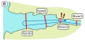
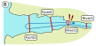

3.1) Processes behind migration()
Hugo Flávio
2020-09-29
Source:vignettes/c-1_migration_processes.Rmd
c-1_migration_processes.RmdIndex
- Note:
- The processes behind one-way efficiency estimations are explained in a dedicated manual page.
Additional movement processes
The initial processes of migration() are the same as those from the explore() function. However, when it comes to movement validity, actel will now also check if the tag was detected at an array that is not directly or indirectly below its release site. Should this happen, the following warning will be issued:
Warning: Tag R64K-1234 was detected in an array that is not after its release site! Opening relevant data for inspection.
Release site: Trap
Expected first array: River3
[...]
You may either:
a) Stop the analysis if the expected first array is wrong;
b) Continue as is (does not impact the results);
c) Render a movement event invalid, if you are confident it is a false detection.
Decision:(a/b/c/comment)- Note:
- An array is considered “behind the release site” if it is not part of the arrays to which the release array connects directly or indirectly. You can find the arrays considered directly or indirectly after/below of each array by checking the arrays object.
Section movements
Upon validating the movement events, the migration analysis proceeds to compressing these array-level events into section-level events. These section-level events are then used to access the unidirectionality of movement, from release to the success arrays.
Backwards movements
Tagged animals can move backwards either because they are reluctant of the new environments or because something ate them and you are now tracking the predator. The very first evidence of this is that the arrays to which each movement event belongs will no longer be arranged as expected.
If this happens, but then the animal continues its journey, then the last movement events on each section will still be ordered as expected. Otherwise, if the animal moves backwards and then never returns, then the last movement events of each section will also be in an unexpected order.
Let’s have a look at two examples:
 

A) Movement events unordered, but last events ordered
In this example, the animal starts by moving towards the Fjord, as expected, but then the moves back upstream into the river again. However, the animal then moves back in the expected direction and eventually leaves the study area. In this case, the last event in the Fjord will be after the last event in the River.
These backwards movements imply going to an anterior section. As such, a warning will be issued:
Warning: Inter-section backwards movements were detected for tag R64K-4456.B) Both Movement events and last events are unordered
In this example, contrary to the above, the animal moves back into the river and then disappears. This means that the last event in the Fjord is actually before the last event in the River.
This has both an impact the assignment of the animal’s fate. As such, a longer warning will be issued:
Warning: Inter-section backwards movements were detected for tag R64K-4526 and the last events are not ordered!Making movements linear
While early versions of actel required you to linearise the movements, the migration update introduced on 2020-05-31 gives migration() the power to handle these events. As such, you can choose to leave them as valid, if you think they represent the movements of your target animal, or invalidate them, if these seem like the movements of a predator, for example. Note that, for CJS calculations, only the forward movements are considered! You can read more about the CJS calculations here.
Once you have gone through this process for all relevant tags, if any section movement has been deemed invalid, the respective array movements will also be invalidated. Actel will let you know this happened by issuing a message:
M: Rendering 1 array movement(s) invalid for tag R64K-4508 as the respective section movements were discarded by the user.Compiling a timetable
Once the movement events have been verified, they will be used to fill in the timetable, which is the most important step of migration(). For each animal, actel will compile a series of metrics for each of the study area’s sections (e.g. average speed, total time spent, number of entries, etc). Once actel determines when the animals entered and left the study area’s sections, it becomes possible to determine the animal’s fate. This is where the success.arrays variable comes in. If the animal was last detected on an one of those arrays, it’s fate will be assigned as “Succeeded”.
Combining the time data with the biometrics
Finally, actel will automatically combine the time information with the information you included in the biometrics file. This new data frame is called status.df, and will be available to you in the function output.
Inspecting the results
Finally, actel will compile some summary tables, prepare the report, and finish up.